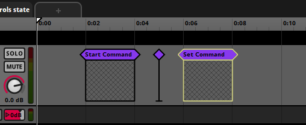
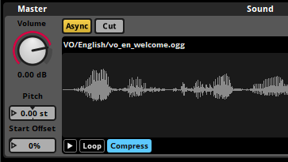
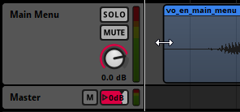
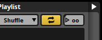
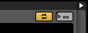
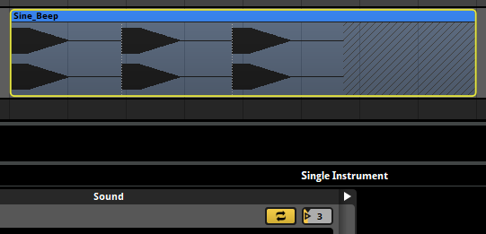
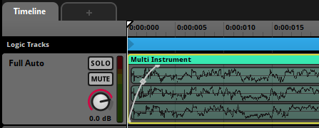
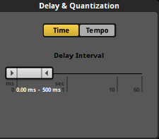
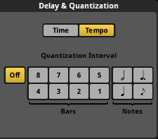

FMOD Studio User Manual 2.02
- Welcome to FMOD Studio
- FMOD Studio Concepts
- Organizing the Project
- Authoring Events
- Working with Instruments
- Managing Assets
- Parameters
- Getting Events into Your Game
- Mixing
- The Sandbox
- Editing During Live Update
- Profiling
- Dialogue and Localization
- Using Source Control
- Supporting Downloadable and User-generated Content
- Advanced Topics
- Quick Start Tutorial
- Event Macros Drawer Reference
- Instrument Reference
- Plug-in Reference
- Modulator Reference
- Parameters Reference
- Scripting
- Scripting API Reference
- Keyboard Shortcut Reference
- Troubleshooting
- Glossary
- Appendix: Celeste Getting Started Guide
- Appendix: Reaper Integration
5. Working with Instruments
FMOD Studio uses the term instrument to describe the variety of trigger regions that can be added to the tracks of an event.
Instruments can be added to any of an event's action sheets or parameter sheets. Instruments on parameter sheets are triggered when the playback position of that parameter overlaps the instrument, whereas instruments on action sheets are triggered when the event begins. Once triggered, an instrument starts the audio, event, command, or snapshot associated with it.
Instruments on parameter sheets can be edited in bulk by holding the Ctrl modifier key and selecting each instrument you wish to edit. Common properties shared between the instruments are highlighted in gold and editing these properties edits them across all selected instruments. If properties are not common to all selected instruments, such as a playlist selection mode when selecting a multi instrument and a single instrument, then these properties are not highlighted.
5.1 Instrument Types
There are several instrument types available for FMOD Studio. Each instrument's type is written in its label.
By default, each type of instrument is a different color. The color of an instrument may make it easier to identify at a glance in FMOD Studio, but has no effect on its behavior, and can be changed by right-clicking on an instrument and selecting "Set Color" from the context menu. Changing an instrument's color does not change its type.
5.1.1 Single Instruments
Single instruments are the simplest form of instruments in FMOD Studio. When triggered they play a single audio file.
To create a single instrument, either right click on an audio track or playlist and select "Add Single Instrument," or drag an audio file onto an audio track or playlist from the assets browser or a file manager application.
5.1.2 Multi Instruments
Multi instruments contain playlists of single instruments, multi instruments, programmer instruments, and/or event instruments. When triggered they select items to play from their playlists according to the instrument's playlist selection mode. Multi instruments are set to shuffle playlist selection mode by default, as this is the recommended behavior in most circumstances.
Multi instruments are commonly used to avoid obvious repetition of audio, in order to make game worlds sound less artificial and more realistic.
To create a multi instrument, either right click on an audio track or playlist and select "Add Multi Instrument," or drag a multi-selection of audio files onto an audio track from the assets browser or a file manager application.
5.1.3 Event Instruments
Event instruments are instruments that play the output of referenced events when triggered. An event that contains an event instrument is called the parent event of the referenced event.
The output of an event instrument is routed into the audio track of the parent event that contains that event instrument, not into the mixer.
By default, the parameters of a referenced event are included in the parent event, and appear in the transport bar when viewing that parent event. Built-in parameters, and parameters whose "Expose recursively via event instruments" checkboxes are not checked, are not exposed in the parent event. If a referenced event makes use of user parameters, controls for those parameters appear in the deck when the event instrument is selected in the parent event.
Setting the value of an exposed parameter in a parent event also sets it in the referenced event, unless the event instrument's parameter control is automated in the parent event (See parameter linking). If the parameter control is automated in the parent event, the referenced event's parameter is controlled by the automation.
Unlike other instrument types, an event instrument's volume dial does not affect the instrument's output volume directly. Instead, it sets the value of the master track's volume fader in every instance of the referenced event created by that event instrument.
Event instruments allow you to use the same content in multiple parts of your project, and make it possible to use all the features of an event inside an instrument.
Some referenced events are nested events. Unlike other events, nested events do not appear in the routing browser and cannot be played at runtime except by playing their parent events. Each nested event is shown under a specific parent event in the events browser, and cannot be referenced in events other than that parent event.
To create an event instrument that references an existing event, drag that event from the events browser onto any audio track of another event. To create an event instrument that references a new nested event, right click on an event's audio track and select "Add Event Instrument".
5.1.4 Scatterer Instruments
Scatterer instruments are a special type of instrument that continuously spawn instances of the 2D or 3D instruments in their playlists.
Scatterer instruments spawn instances of instruments in their playlists in a similar manner to multi instruments. Unlike multi instruments, however, a scatterer instrument can select and spawn an instrument from its playlist regardless of when the previous one it spawned finishes playing, can randomize the volume and pitch of each spawned instance individually, and can assign a different location to each spawned instance for the purposes of panning and other location-dependent behaviors.
By setting a scatterer instrument's min & max spawn interval ribbon slider, you can define its temporal randomization behavior. A scatterer instrument's min & max spawn interval ribbon slider defines the range of duration that can pass between the start of one playlist entry instance spawned by that scatterer instrument and the start of the next.
Switching the spawn interval's mode to "tempo" only spawns new instances from the playlist on specific notes or bars. The timeline positions of beats and bars in an event are determined by the event's tempo markers. If there are no tempo markers in the event, it defaults to 120 beats per minute and 4/4 time for this purpose.
By setting a scatterer instrument's min & max distance ribbon slider, you can define its spatial randomization behavior. All instances spawned by the scatterer are randomly assigned a location (for the purposes of panning) that's a random distance away from the event emitter in a random direction. The min & max distance ribbon slider defines the range of possible distances. Setting a scatterer instrument's min & max distance to 0 disables spatial randomization for that scatterer instrument.
Event reference instruments in a scatterer instrument playlist use the referenced events' 3D behaviors for the purposes spatial randomization. This means that referenced events that lack 3D behavior (due to having no built-in parameters or spatializer effects) are not affected in any way by spatial randomization.
Single instruments and programmer instruments in a scatterer instrument playlist are panned as if affected by a spatializer effect with a linear squared rolloff curve and a max distance of 20. Setting a scatterer instrument's min & max distance to 0 disables this, and prevents that scatterer instrument from applying panning to single instruments in its playlist.
By setting a scatterer instrument's vol rnd and pitch rnd properties, you can specify the degree to which the pitch and volume of each instance it spawns should be randomized. The degree of pitch or volume adjustment is determined independently for each spawned instance.
When placed onto an audio track each instrument played from the playlist has its own spatializer attached that allows its location to be randomized, even when the scatterer instrument is placed in a 2D event. If, however, the scatterer instrument's playlist contains 2D event instruments then those event instrument's output will be in 2D.
Scatterer instruments are perfect for creating ambience, such as having crickets chirping inside a field.
To create a scatterer instrument, right click on an audio track and select "Add Scatterer Instrument".
5.1.5 Programmer Instruments
Programmer instruments are a type of empty instrument that generates callbacks. These callbacks are then used to play any audio file the programmer chooses - whether it's a part of the FMOD Studio project or not.
Programmer instruments are perfect for games with a lot of dialogue and localization, especially when combined with audio tables.
To create a programmer instrument, right click on an audio track or playlist and select "Add Programmer Instrument".
5.1.6 Command Instruments
Command instruments are a type of instrument that can issue a specific command to your game's FMOD Studio system. This command is treated just as if it was issued through the FMOD Engine.

There are a number of different commands that a command instrument can issue:
- Start Event: Triggering the command instrument creates and plays an instance of the target event. Instruments created in this fashion are routed through their normal routing paths, not through the tracks of the event that contains the command instrument. Instruments started by this command are given Studio::EventInstance::release commands, meaning they will automatically be destroyed and stop consuming memory once they stop.
- Stop Event: Triggering the command instrument stops all ongoing instances of the target event other than instances created by event instruments, just as if they were stopped with FMOD_STUDIO_STOP_ALLOWFADEOUT. Event instances stopped by this command are not automatically given Studio::EventInstance::release commands.
- Stop Event - Immediate: Triggering the command instrument stops all ongoing instances of the target event other than instances created by event instruments, just as if they were stopped with FMOD_STUDIO_STOP_IMMEDIATE. Event instances stopped by this command are not automatically given Studio::EventInstance::release commands.
- Set Parameter: Triggering the command instrument sets the target parameter to the specified value. If the parameter is local, its value is set only in the event instance in which the command instrument is triggered.
- Increment Parameter: Triggering the command instrument changes the target parameter by the specified amount. If the parameter is local, its value is set only in the event instance in which the command instrument is triggered.
You can set the command of a command instrument in the deck.
Unlike other instruments, command instruments have no minimum length.
To create a command instrument, right click on an audio track or playlist and select "Add Command Instrument".
5.1.7 Snapshot Instruments
Snapshot instruments are a type of event instruments. When a snapshot instrument is triggered, an instance of the corresponding snapshot is started, and the properties scoped into that snapshot are set to the values it specifies.
Once the playback position leaves the instrument, the snapshot instance stops, and the properties scoped into that snapshot return to their normal values.
Snapshots are perfect for creating reverb zones in your game.
To create a snapshot instrument, drag a snapshot onto an audio track, or right-click on an audio track and select "Add Snapshot Instrument".
For more information and other ways of triggering snapshots, see the snapshots and the tracks view section of the mixing chapter.
5.1.8 Plug-in Instruments
Plug-in instruments are a type of instrument that can produce any kind of custom sound you may need.
For example you may need a specific type of synthesizer, a procedurally generated audio instrument, or even a tracker file playback instrument.
To create a plug-in instrument, right click on an event's audio track and select a plug-in from one of the sub-menus in "Add Plug-in Instrument".
By default, FMOD Studio is bundled with trial versions of AudioGaming's AudioWeather and AudioMotors plug-ins.
You are free to develop your own plug-in instruments. For more information on how to do this, please see the FMOD Core API documentation.
5.2 Synchronous and Asynchronous Instruments
With some instruments, it's useful to have fine control over the way their associated audio files get played. The type of control you have depends on whether the instrument is synchronous or asynchronous.
In a synchronous instrument, the part of the audio file that plays corresponds to the position of the timeline playback position over the trigger region's waveform graphic. This lets you seek or scrub within audio files by moving the timeline playback position.
In an asynchronous instrument, the precise location of the playback position within the trigger region is ignored. Instead, the instrument plays from the beginning when it is triggered. This lets you treat asynchronous instruments like switches that can be turned on and off, and always do the same thing.
To check whether an event is synchronous or asynchronous, first select the instrument, then look for the "Async" button in the deck. If the button is yellow, the instrument is asychnonous, otherwise it is synchronous. If there is no "Async" button in the deck, the instrument can only be asynchronous.

Clicking on the "Async" button toggles the instrument between being asynchronous and synchronous.
These are the default states of each type of instrument when placed on a timeline parameter sheet:
- Single Instruments. Synchronous.
- Multi Instruments. Synchronous.
- Event Instruments. Asynchronous, cannot be changed.
- Scatterer Instruments. Asynchronous, cannot be changed.
- Programmer Instruments. Synchronous.
- Plug-in Instruments. Plug-in instruments may default to being synchronous or asynchronous, depending on how they are designed.
- Command Instruments. Asynchronous, cannot be changed.
- Snapshot Instruments.: Asynchronous, cannot be changed.
Only instruments on timeline parameter sheets can be synchronous. Instruments on other parameter sheets and action sheets are always asynchronous.
5.2.1 Synchronous Instruments
In synchronous mode, an instrument's length determines how long its assets(s) plays for.
If the instrument's length is shorter than that of the asset being played, it will stop producing audio once the playback cursor leaves the trigger region.
The loop mode of an instrument is a way of making it repeat its content. If the instrument is set to loop, it will replay its content for the length of the instrument. By default, no instruments are set to loop. Instruments created through dragging assets onto an audio track will match the length of that asset or the longest asset in that multi-selection.
In synchronous mode, the part of the waveform that plays is the part of the waveform that's overlapped by the playback position. This allows you to seek (or scrub) within an audio file instead of always starting to play from the beginning.
You can trim the beginning and end of an instrument to state when it should start and finish by clicking and dragging either end of the instrument to the left or right.

If you use a transition marker to move to the middle of an instrument set to synchronous mode, the instrument will play back audio from that point in the asset.
Synchronous mode is useful for transitioning around tracks in dynamic music.
Please note that synchronous instruments only play out the release period of an AHDSR modulator if they're untriggered as a result of a parameter condition, and not if they're untriggered by the playback position leaving the trigger region.
If a loop region, transition marker, or transition region moves the playback position from one part of a synchronous instrument's trigger region to another, that instrument is untriggered and retriggered in the process. Untriggering and retriggering an instrument in this fashion causes attached AHDSR modulators to begin their attack periods.
5.2.2 Asynchronous Instruments
Asynchronous mode is used for when you need assets to play in their entirety once triggered. Asynchronous instruments act like on/off switches - once the playback position has entered any part of the trigger region the asset associated with that instrument will start playing from the beginning.
Asynchronous instruments are more useful than synchronous instruments in most situations where you don't need to seek within an audio file. They're more flexible with timeline transition markers and transition regions, they work better with modulators, and the decoupling of timeline position and the waveform means they often work much better when using instrument parameter conditions. This is because when the parameter conditions are met, asynchronous instruments will start playing from the beginning of the waveform. By comparison, synchronous instruments will start playing the waveform from where the playback position is once the trigger conditions are met, which is not always desirable.
An asynchronous instrument will play out the release period of an AHDSR modulator if it is untriggered by the playback position leaving the trigger region. Since this is the most common way for an instrument to be untriggered, using asynchronous instruments is very useful when considering modulators.
5.3 Looping Instruments
Instruments may be set to loop, so that they don't stop immediately after playing a single audio file or playlist entry. To make an instrument loop, select the instrument in the editor, then click on its loop instrument or loop playlist toggle button in the deck.
The loop playlist toggle button is only found on multi instruments, and appears in the deck when a multi instrument is selected in the editor. When toggled on, the loop playlist toggle button causes the multi instrument to select a new playlist entry to play each time it finishes playing a playlist entry.

The loop instrument button is found on most types of instruments. It appears in the deck when a single instrument or programmer instrument is selected in the editor, and also when a single instrument or programmer instrument is selected in the playlist of a multi instrument or scatterer instrument. When toggled on, the loop instrument button causes the selected single instrument or programmer instrument to play repeatedly instead of just once. If the loop instrument button is toggled on for only some of the entries in a playlist, only those entries will loop when they are selected for playback.

Toggling on either kind of loop toggle button causes the adjacent play count number box to become active and editable.
The looping behavior of an instrument also depends on the instrument's play count properties, whether the instrument is synchronous or asynchronous, and whether it is untriggered while playing.
5.3.1 Play Count
Play count is a property of instruments, playlists other than action sheets, and playlist entries. The exact effect of a play count property depends on whether it is associated with an instrument or playlist entry or with a playlist.
In the case of an instrument or playlist entry, play count is the maximum number of times the instrument or playlist entry can play when triggered or selected.
In the case of playlists, play count is the maximum number of times the playlist may select a new entry when the multi instrument is triggered.
If a loop instrument toggle button or loop playlist toggle button is toggled off, its associated play count number box is grayed out and inactive. In this state, the effective play count of the instrument, playlist entry or playlist is always one.
5.3.2 The Content Graphics of Synchronous Instruments
If a single instrument or programmer instrument is synchronous and its play count is greater than one, the content graphic on its trigger region shows multiple copies of the associated waveform end-to-end, separated by vertical dotted lines. The number of waveforms displayed when the instrument is set to loop is equal to the number of copies that fit on the trigger region, up to a maximum of the instrument's play count property.

If a single or programmer instrument is asynchronous or is not set to loop, its content graphic shows only a single copy of the instrument's associated waveform.
5.3.3 Untriggering Looping Instruments
Synchronous instruments immediately fall silent and stop producing output when no longer overlapped by the timeline playback position, even if they have not finished playing the number of times specified by their loop count properties.
Asynchronous looping instruments whose cut behavior is "cut immediately" immediately stop producing output when untriggered.
Asynchronous looping instruments whose cut behavior is "play to end" play out to completion when untriggered, as dictated by their play count properties:
- Finite play count - The instrument plays out to completion normally.
- Infinite play count - The instrument finishes the playlist entry that it's currently playing, then stops.
If an entry in the playlist of an asynchronous multi or scatterer instrument has an infinite play count, its behavior depends on whether an instance of that playlist entry is playing when the instrument is untriggered:
- An instance of the playlist entry is playing - That instance of the playlist entry plays to its end before stopping.
- No instance of the playlist entry is playing - That playlist entry is treated as if its play count is 0.
How the loop mode, play count, synchronicity or asynchronicity, and cut mode of an instrument affects its behavior when untriggered is summarized in the following table.
| Looping | Play count | Sync/Async | Cut | Behavior when Untriggered |
|---|---|---|---|---|
| No | N/A | Sync | N/A | Stops immediately. |
| No | N/A | Async | No | No special behavior*. |
| No | N/A | Async | Yes | Stops immediately. |
| Yes | ∞ | Sync | N/A | Stops immediately. |
| Yes | ∞ | Async | No | Plays to end of current entry, then stops*. |
| Yes | ∞ | Async | Yes | Stops immediately. |
| Yes | 1 | Sync | N/A | Stops immediately. |
| Yes | 1 | Async | No | No special behavior*. |
| Yes | 1 | Async | Yes | Stops immediately. |
| Yes | n | Sync | N/A | Stops immediately. |
| Yes | n | Async | No | No special behavior*. |
| Yes | n | Async | Yes | Stops immediately. |
*If the instrument has a playlist, and that playlist contains an entry that's set to loop, that entry's behavior depends on whether it is playing when the instrument is untriggered, as described above.
5.4 Fade In and Fade Out
Each instrument on a parameter sheet can be given fade curves. This allows for smoothly starting or finishing an instrument's sound, but behaves differently from an AHDSR modulator.
To add a fade in or a fade out to an instrument, hover your mouse over the top left or right corner of the instrument. Once the mouse cursor changes to a curved arrow, click and drag to the desired position.

You can click and drag on the shape handle to adjust the speed of the fading.
The position of the playback position on the fade curves determines the volume of the instrument at that time. If the playback position moves to a part of the instrument where a fade-in or fade-out appears, then the volume of the instrument will be the level shown by the fade in or fade out curves. This is the same behavior as if you were to use automation on the instruments volume.
By comparison, an AHDSR modulator will only be applied when an instrument is triggered and released.
Instruments that have both a fade in or fade out and an AHDSR modulator will have both applied.
5.5 Cut and Modulation
When an instrument on a parameter sheet is set to asynchronous mode, you can also toggle its cut mode on or off. Using this in conjunction with AHDSR modulators can affect how an instrument finishes playing once the playback position has left the trigger region.
5.5.1 Cut
Cut allows an asynchronous instrument to become untriggered once the playback position has left its trigger region. Unlike with synchronous instruments, when an asynchronous instrument becomes untriggered in this way it can then play out using an AHDSR Modulator.
You can enable cut mode by clicking on the "Cut" button to the right of the "Async" button. Cut is not enabled by default. When cut mode is not enabled, the instrument will play its asset in its entirety once triggered.
If cut mode is enabled on the instrument, then the AHDSR modulation will completely override this behavior no matter which property it is applied to. Once the playback position leaves the trigger region, the instrument becomes untriggered and the release will be applied.
5.5.2 AHDSR Modulation
AHDSR (Attack, Hold, Sustain, Decay, Release) modulation is a type of envelope that gives you control over how a property of an event or instrument changes when the event or instrument starts, what its value is at its peak, and how it changes when the event or instrument is stopped or untriggered. For more information on how to use AHDSR modulation, please see the modulation section of the authoring events chapter.
On a synchronous instrument the AHDSR modulation will not apply the release when untriggered by the playback position leaving the trigger region. This is due to the fact that a synchronous instrument will stop playing once the playback position has left the trigger region but that is also the exact same time the release is applied. Release will only be applied on a synchronous instrument if the instrument's parameter conditions stop being true.
On an asynchronous instrument the AHDSR modulation will be applied in its entirety. When the playback position leaves the trigger region, the instrument will become untriggered and apply the release.
An instrument inside the playlist of another instrument is never directly untriggered, so an AHDSR modulator on a playlist entry of a multi instrument never plays out its release period.
5.6 Delay And Quantization
FMOD Studio allows you to set an instrument on a parameter sheet to delay playing back until a certain time, until a certain amount of time has elapsed, or until a certain musical beat. This is useful if you need instruments to be played back only at or after certain times. For example, stingers in your dynamic background music that must keep with the tempo of the song, or random fire crackling for a camp fire sound effect.
5.6.1 Time
The time property of an instrument's trigger behavior allows you to define a period of time to be waited before playing that instrument. While an instrument is triggered the instant the playback position makes contact with its associated trigger region, it does not actually have to start playing the instrument at this point.
The delay & quantization section of the trigger behavior drawer has a "Time" button that, when enabled, displays the "Delay Interval" property that works via a ribbon slider.
The slider defines the minimum and maximum time values in milliseconds or seconds an instrument's conditions must continue to be met before it will trigger. If the instrument's trigger conditions are unmet before the minimum amount of time specified, it will not have a chance to trigger.
If both the min and max values are the same then a fixed delay is always applied to that instrument every time it is activated. If the min and max values are different then they create a window in time. FMOD Studio counts at least the minimum time value and no more than the maximum time value, but between those two it randomly selects a period of delay to apply to the instrument.

You can define the values by either dragging the ends of the ribbon slider to the desired values, or double clicking on the displayed numbers to directly input exact values.
5.6.2 Tempo
The delay & quantization section of the trigger behavior drawer has a "Tempo" button that, when enabled, displays the "Quantization Interval" behavior for the instrument.

When an event includes a tempo marker, FMOD Studio applies tempo tracking as well as counting regular time. If an event does not include any tempo markers, it instead defaults to 120 beats per minute and 4/4 time. Tempo quantization allows instruments to be delayed slightly so that they trigger in time with the defined tempo and as such sound more "musical".
You can switch to view beats in the timeline and the time indicator by clicking on the "Beat" button on the time indicator section.
Once a tempo marker is added to an event, the timeline ruler changes to match the tempo measures in bar and beat format when the timeline is set to display beats. Instrument trigger regions can be moved to align with these measures, but the quantization property ensures they trigger in sync with the musical measures.
The quantization property can be set to either bar values of 1 or 2, or beat values of minim, crotchet, dotted crotchet or quaver measures.

5.7 Trigger Conditions
It is possible to set certain trigger conditions for instruments on parameter sheets.
By default, an instrument on a parameter sheet is triggered when the playback position overlaps the instrument's trigger region. You can add further conditions in the instrument's trigger behavior drawer. Click on the disclosure triangle to the left of the instrument's panel in the deck to view these settings.
To add a parameter condition to an instrument, click the "Add Condition" button at the bottom of the conditions list and select the parameter you want the instrument to be triggered by. This automatically adds the parameter to the event if it is not already present. You can use each parameter no more than once in each instrument's conditions list, and timeline parameters cannot be used for this purpose.
Only when all the conditions in the conditions list have been met and the playback position is withing the instruments trigger region will the instrument start playing. In the same regard, the instrument will become untriggered when any of the conditions stop being met.
If there are any delay and quantization settings in place, then the instrument won't start playing unless all conditions are met at the exact point the quantization point is reached. A quantized instrument will become untriggered immediately when a condition is not met anymore.
You can further customize the trigger conditions by enabling the randomization button (labeled with a dice). Changing the "Probability" dial in the probability conditions will give a percentage value for if the instrument will trigger. These probability calculations are called at the time that all conditions are met and won't be recalculated until the conditions have been unmet then remet.